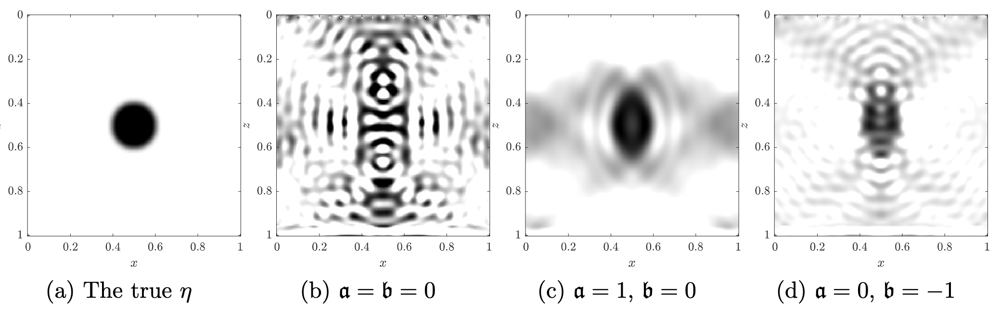

|
Srinath Mahankali I am an undergraduate student at MIT where I am advised by Pulkit Agrawal as part of the Computer Science and Artificial Intelligence Laboratory (CSAIL). I am very interested in deep learning, reinforcement learning, and their application to robotics. Currently, I am working on improving exploration in deep reinforcement learning and developing energy-efficient controllers for quadruped locomotion through sim-to-real reinforcement learning.
Previously, I worked on inverse problems with Yunan Yang and studied the linear separability of one-layer neural networks with Promit Ghosal. Email / CV / Google Scholar / LinkedIn |
Updates
|
Research |
|
Random Latent Exploration for Deep Reinforcement Learning
Srinath Mahankali, Zhang-Wei Hong, Ayush Sekhari, Alexander Rakhlin, Pulkit Agrawal ICML, 2024 project website We improve exploration in both discrete and continuous control domains by optimizing random reward functions parameterized by a sampled latent vector. | |

|
Maximizing Velocity by Minimizing Energy
Srinath Mahankali*, Chi-Chang Lee*, Gabriel B. Margolis, Zhang-Wei Hong, Pulkit Agrawal ICRA, 2024 We train energy-efficient policies for quadruped locomotion tasks while improving task performance through constrained reinforcement learning. |
|  |
Norm-dependent convergence and stability of the inverse scattering series for diffuse and scalar waves
Srinath Mahankali, Yunan Yang Inverse Problems, 2023 paper / abstract We prove bounds on the convergence and stability of the inverse scattering series under different Sobolev norms, finding conditions under which the radius of convergence and stability are improved. |

|
Randomly Initialized One-Layer Neural Networks Make Data Linearly Separable
Promit Ghosal, Srinath Mahankali, Yihang Sun arXiv preprint, 2022 paper / abstract Randomly initialized one-layer neural networks, with high probability, make datasets linearly separable. |

|
The convexity of optimal transport-based waveform inversion for certain structured velocity models
Srinath Mahankali SIAM Undergraduate Research Online, 2021 paper / abstract Full waveform inversion with an optimal transport-based objective has superior convexity compared to the standard least-squares objective function for certain velocity models. |
|
Design and source code from Jon Barron's website. |